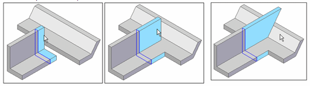

Construct a protrusion or cutout: model face
Create from model face
-
Click the Select tool, and then select the model face profile you want to extrude or cut.
-
Define the To point. You can click another face, drag the face and then click, select the Keypoint option to specify a type of design point, or type a value in the Distance box.
Example:To extrude a model face so that it intersects another model face, click the profile face, and then click the face to extend it to. The profile face is automatically trimmed to fit.

-
Complete the protrusion or cutout by doing one of the following:
-
Click in free space.
-
Click Accept (green check mark) on command bar.
Any dimensions that were attached to the model face are reapplied.
-
-
Create another protrusion or cutout, or click Finish on the command bar.
A uniquely identified protrusion or cutout is added to the Face Sets collection on Feature PathFinder. If you created more than one protrusion or cutout before finishing the command, all of the faces are included.
Tip:-
You can return to a previous step and edit the feature before accepting it.
-
Selecting another command accepts the feature automatically.
-
To edit the protrusion or cutout, click a face.
-
How do I
Construct a protrusion or cutout (ordered)Define the extent of an extruded feature
Construct a base feature
Construct a cutout (ordered)
Construct a hole
Construct a hole (ordered)
Construct a hole on a cylinder
Construct an extrusion: base feature
Construct an extrusion or cutout: subsequent features
Construct a Normal Protrusion
Construct a Normal Cutout (Part Environment)
Finish the Feature
Examples: Constructing Protrusions With the Finite Option
Examples: Constructing Protrusions With the Through All Option
Examples: Constructing Protrusions With the Through Next Option
Examples: Constructing Cutouts With the Through All Option
Examples: Constructing Cutouts With the Through Next Option
Examples: Constructing Cutouts With the Finite Option
Learn more
Part modeling workflow overviewPart modeling: Tips for getting started
Look up more details
Extrude command (synchronous)Extrude command bar (synchronous)
Extrude command (ordered)
Extrude command bar (ordered)
Cut command
Cut command bar
Demo: Create protrusion or cutout using keypoint
Normal Protrusion command
Normal Protrusion command bar
Normal Cutout command (Part environment)
Normal Cutout command bar (Part environment)